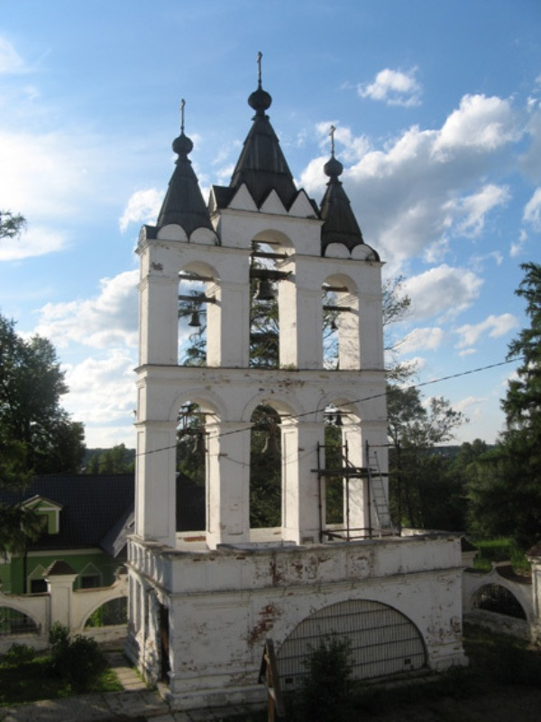

|  | Министерство культуры Российской Федерации Портал Культура.рф Проект «Образы России» |
Le musée-réserve naturel de Pouchkine (Vyazemy)
LE CLOCHER

A côté de l’église du côté nord s’élève le clochet de la même époque sous forme d’un mur à trois travées placé sur la terrasse ouverte de repos. Fait en brique, avec les pièces en pierre blanche son architecture est proche à l’aménagement de l’église. C’est une seule construction qui a été conservée de trois constructions identiques, le clocher représente la construction unique de cette nature. Encore au milieu du XIXe s. le monument a été incliné et a été redressé selon le projet de E.M.Gendel en 1954. Au cours de la renovation ultérieure son achèvement à trois couvertures pyramidales a été renové.
La clôture en brique de l’ensemble de l’église est une copie de celle précédente de la deuxième moitié du XVIIIe s. Reconstruite au début du XXe s. elle a été renovée dans la majeure partie dans les années.